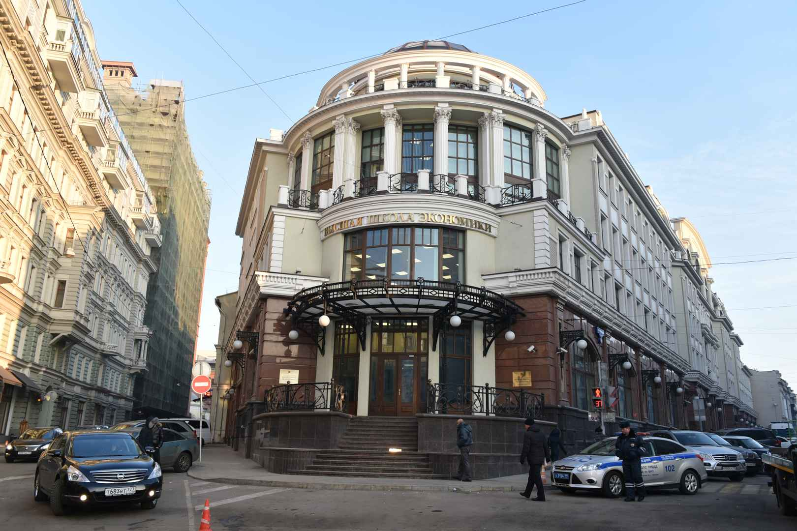

Как выбрать ВУЗ для поступления
Многие школьники рано или поздно начинают задумываться о своём будущем. У тех, кто пошёл получать общее среднее образование, часто возникает один и тот же вопрос: куда идти учиться дальше? Казалось бы, что ответ прост — в высшее учебное заведение. Но в какое? Ведь их так много. В этой статье я постараюсь дать несколько рекомендаций, благодаря которым вам будет проще сделать выбор в пользу какого-либо вуза.
Оглавление
Пункт 1. Сначала выберите профессию
Скажите, хотите ли вы потратить свои 5 лет жизни в никуда, каждый день ходя на скучные и неинтересные пары, информацию с которых вы будете просто пропускать мимо ушей, а в конце обучения понять, что вы ничему так и не научились? Нет? Это хорошо. А ведь сценарий, приведённый мною ранее, не редкость, и до сих пор многие студенты продолжают ему следовать изo дня в дeнь. Чтобы подобного с вами не произошло, стоит определиться заранее с профессией, которую вы хотите получить по окончанию обучения. Этот вопрос не простой и требует много времени на анализ и раздумья. Не стоит спешить с выбором. Потратьте время, оставшееся до подачи документов в вузы, на изучение информации об интересных и востребованных специальностях, которые вас заинтересуют. Ориентируйтесь на предмет, который вам нравится или, по крайней мере, не вызывает трудностей. Зная заранее, чем хочется заниматься, в 11 классе вы сможете просто открыть Общероссийский классификатор специальностей и выбрать факультет по душе и дальше уже выбирать ВУЗ по предмету.
Пункт 2. Составьте свой рейтинг вузов
Если вы уже определились со специальностью, которую хотите получить, то дальше стоит начать рассматривать вузы, где вас ею могут обучить. В сети вы найдёте множество рейтингов высших учебных заведений, но объективную картину даст только ваш личный. Для простоты поиска вы можете использовать сайт Вузотека, на котором можно отфильтровать вузы по нужной вам специальности. Скорее всего, наберётся несколько десятков университетов и институтов, которые будут соответствовать фильтру. Дальше же придётся использовать основные критерии отбора, чтобы найти самый лучший вариант.
Критериями отбора могут служить следующие факторы:
- Географическое местоположение. При выборе вуза по географическому местоположению существуют различные критерии, которые могут повлиять на решение студента. Один из таких критериев - расстояние от дома. Некоторым студентам важно учиться рядом с родным городом, чтобы поддерживать связи с семьей и иметь возможность посещать их регулярно. Другие же предпочитают учиться в другом городе или даже за границей, чтобы погрузиться в новую культуру и получить опыт жизни в другом месте. Климатические условия также могут играть роль в выборе вуза. Некоторым студентам нравится теплый климат, где они могут наслаждаться солнцем и теплыми погодными условиями. Другие могут предпочитать более прохладный климат или сезонные изменения, которые могут предложить разнообразие активностей и опытов. Размер города или региона также может быть важным фактором. Некоторые студенты предпочитают учиться в крупном мегаполисе, где есть множество возможностей для работы, культурных мероприятий и развлечений. Другие же предпочитают более спокойную атмосферу небольшого города или пригорода, где они могут наслаждаться уютом и близостью к природе. Еще одним критерием может быть региональная специализация или возможность исследования определенной географической области. Если студент интересуется конкретной областью, выбор университета в этой области может предоставить ему уникальные возможности для исследования и изучения этого региона. Это может быть особенно актуально для студентов, которые интересуются научными исследованиями, экологией или культурным наследием определенной местности. Наконец, расположение университета относительно семьи и друзей может быть важным фактором для некоторых студентов. Близость к семье и друзьям может обеспечить студенту поддержку и комфорт во время учебы, особенно в первые годы обучения. В целом, выбор вуза по географическому местоположению зависит от личных предпочтений и потребностей каждого студента. Важно учесть свои цели, интересы и комфорт, чтобы принять информированное решение, которое будет соответствовать индивидуальным потребностям.
- Государственный или коммерческий. Оба типа вузов имеют свои особенности, и выбор между ними зависит от индивидуальных потребностей и предпочтений студента. Государственные вузы финансируются государством и, как правило, имеют более доступные стоимость обучения для студентов. Они часто предлагают широкий спектр специальностей и обладают богатыми академическими ресурсами, такими как библиотеки, лаборатории и исследовательские центры. Государственные вузы также могут иметь более престижные статусы и лучшие возможности для трудоустройства после окончания обучения. С другой стороны, коммерческие вузы финансируются за счет платы студентов и часто имеют более высокую стоимость обучения. Они могут предлагать более специализированные программы, ориентированные на практические навыки и требования рынка труда. Коммерческие вузы также могут обладать гибкими учебными планами и предлагать более небольшие классы, что способствует более индивидуальному подходу к обучению. При выборе между государственным и коммерческим вузом, студенту следует учитывать свои финансовые возможности, предпочтения по программам обучения, академическую репутацию учебного заведения, доступность стипендий и возможности для будущей карьеры. Важно также провести исследования и посетить университеты, чтобы получить более полное представление о их преимуществах и особенностях. В конечном итоге, выбор между государственным и коммерческим вузом — это индивидуальное решение, которое должно соответствовать потребностям и целям каждого студента. Важно внимательно взвесить все факторы и выбрать учебное заведение, которое наилучшим образом подходит для достижения личных и профессиональных целей. Проверить вуз можно на сайте Рособрнадзора.
- Наличие бюджетных мест или возможность перехода на бюджет. Бюджетное обучение позволяет студентам получить высшее образование без необходимости оплачивать полную стоимость обучения, что делает его привлекательным для многих абитуриентов. Наличие бюджетных мест в вузе означает, что определенное количество студентов будет зачислено на бюджетную основу. Количество бюджетных мест может различаться в зависимости от университета, факультета и специальности. Обычно бюджетные места распределяются на конкурсной основе, и отбор происходит на основе успеваемости и результатов вступительных испытаний. Возможность перехода на бюджет является также важным критерием при выборе вуза. Некоторые вузы предоставляют студентам возможность начать обучение на платной основе и в дальнейшем, при выполнении определенных условий (например, высоких академических показателей), перейти на бюджетное обучение. Это дает студентам шанс сэкономить на обучении и получить бюджетное место после успешного завершения первых курсов. Выбор вуза с учетом наличия бюджетных мест или возможности перехода на бюджет позволяет студентам планировать свои финансы и обеспечивает им дополнительные возможности для получения высшего образования. Однако, следует учитывать, что конкуренция за бюджетные места может быть высокой, и не все студенты смогут получить такую возможность. Поэтому при выборе вуза важно также учитывать другие факторы, такие как качество образования, репутация университета, наличие интересующих специальностей и возможности для личного и профессионального развития.
- Сложность поступления. Сложность поступления отражает уровень требований и испытаний, которые необходимо пройти для поступления в конкретный университет. Сложность поступления в вуз может зависеть от нескольких факторов. Во-первых, это может быть связано с академическими требованиями. Некоторые университеты могут иметь более высокие стандарты в отношении оценок, результатов экзаменов или других показателей успеваемости, которые студенты должны достичь для поступления. Это может включать высокие баллы по ЕГЭ или другим стандартизированным тестам, а также требования к предметному составу. Во-вторых, сложность поступления может быть связана с конкуренцией. Если вуз является популярным или имеет высокую репутацию, количество претендентов на поступление может быть значительно больше, чем количество доступных мест. В таких случаях университет может устанавливать более жесткие критерии отбора, чтобы выбрать самых лучших студентов. Третий фактор, влияющий на сложность поступления, - это специфика программы обучения. Некоторые специализированные программы или факультеты могут иметь дополнительные требования или тесты, которые нужно пройти для поступления. Например, для поступления на медицинскую или юридическую специальность могут потребоваться дополнительные экзамены или интервью. Выбор вуза на основе сложности поступления может быть обусловлен различными факторами. Некоторые студенты предпочитают вызов и стремятся поступить в университеты с высокими стандартами и конкуренцией, чтобы испытать себя и получить престижное образование. Другие студенты могут предпочитать вузы с более низкой сложностью поступления, чтобы увеличить свои шансы на поступление и облегчить процесс.
- Учебная деятельность. Учебная деятельность включает в себя академическую успеваемость, качество образовательных программ, наличие исследовательских возможностей и академическую поддержку. Одним из основных аспектов учебной деятельности является академическая успеваемость студентов. Это может включать оценки, результаты экзаменов и другие показатели успеха в учебе. Высокие стандарты оценок и требования к успеваемости могут указывать на серьезность и качество образования в университете. Студенты, которые стремятся к академическому превосходству, могут предпочитать университеты с высокими требованиями в отношении учебной деятельности. Кроме того, качество образовательных программ также является важным аспектом учебной деятельности. Университеты, которые предлагают широкий спектр курсов, актуальные и инновационные программы обучения, а также возможности для практического применения знаний, могут привлекать студентов, которые стремятся получить качественное образование и развить свои навыки. Также важно учитывать наличие исследовательских возможностей в университете. Университеты, которые активно проводят научные исследования и предлагают студентам возможность участвовать в них, могут привлекать тех, кто интересуется научной деятельностью и стремится к академическому росту. Наконец, академическая поддержка также является важным аспектом учебной деятельности. Университеты, которые предоставляют студентам доступ к квалифицированным преподавателям, тьюторам, библиотечным ресурсам и другим формам поддержки, могут помочь студентам успешно справиться с учебными вызовами и достичь своих академических целей. Выбор вуза на основе учебной деятельности зависит от предпочтений и целей студента. Некоторые студенты предпочитают университеты с высокими стандартами и академической строгостью, чтобы получить качественное образование и вызвать себя на академическую борьбу. Другие студенты могут искать университеты с более гибкими требованиями и большим разнообразием образовательных возможностей. Важно учитывать свои цели, интересы и личные потребности при выборе учебного заведения на основе учебной деятельности.
- Формы обучения. Очное, очно-заочное отделение и дистанционное обучение все эти параметры играют важную роль при выборе университета.
- Студенческая жизнь и внеучебная деятельность. Студенческая жизнь включает в себя различные аспекты, такие как социальная активность, клубы и организации, спортивные возможности, культурные мероприятия и многое другое. Один из аспектов студенческой жизни - социальная активность. Многие студенты стремятся найти университет, где они смогут встретить единомышленников, развить новые дружеские связи и научиться работать в команде. Наличие разнообразных клубов, организаций и студенческих групп может предоставить студентам возможность участвовать в интересных мероприятиях, общаться с другими студентами и расширить свой круг общения. Спортивные возможности также являются важным аспектом студенческой жизни. Многие университеты предлагают различные спортивные программы и команды, где студенты могут заниматься своими любимыми видами спорта, улучшать свои физические навыки и участвовать в соревнованиях. Это может быть особенно привлекательно для студентов, которые увлечены спортом и хотят продолжать его заниматься во время учебы. Культурные мероприятия и множество возможностей для развлечений также являются важными аспектами студенческой жизни. Университеты, которые предлагают широкий спектр культурных мероприятий, концертов, выставок, театральных постановок и других развлекательных активностей, могут предоставить студентам возможность расширить свои горизонты, познакомиться с различными аспектами культуры и насладиться своими увлечениями во время учебы.
- Общежития и столовые. Общежития и столовые представляют собой места, где студенты проводят значительную часть своего времени во время учебы, и их качество и удобство могут оказывать значительное влияние на комфорт и благополучие студентов. Общежития предоставляют студентам место для проживания вблизи учебных заведений. Качество общежитий может варьироваться в зависимости от университета. Важными факторами, которые студенты обычно учитывают при выборе учебного заведения на основе общежитий, являются безопасность, комфорт, доступность и соответствие личным предпочтениям. Студенты обычно интересуются наличием различных типов комнат (одноместные, двухместные, общежития для семей и т. д.), наличием кухонь и прачечных, доступностью интернета и другими удобствами. Кроме того, важно также учитывать близость общежитий к учебным зданиям, библиотекам и другим академическим ресурсам. Столовые на территории учебного заведения предоставляют студентам возможность получать питание в удобном и доступном месте. Качество питания и разнообразие меню могут быть важными факторами при выборе учебного заведения на основе столовых. Студенты обычно интересуются качеством пищи, наличием различных вариантов питания (вегетарианское, безглютеновое и т. д.), возможностью получать питание в удобное время и доступностью столовых во время учебы. Общежития и столовые могут значительно влиять на студенческую жизнь и благополучие студентов. Удобные и комфортные общежития создают условия для хорошего отдыха и сна, а также способствуют социальной активности и взаимодействию с другими студентами. Качественные столовые предоставляют студентам возможность получать питание, поддерживать здоровый образ жизни и экономить время на приготовлении пищи.
- Наличие договоров с зарубежными вузами. Наличие таких договоров может предоставить студентам широкий спектр преимуществ и возможностей для обучения и развития. Сотрудничество между вузами в рамках договоров с зарубежными университетами позволяет студентам участвовать в программе обмена студентами, проходить стажировки или учиться за рубежом. Это дает студентам возможность познакомиться с другой культурой, языком и образовательной системой, расширить свои горизонты и развить межкультурные навыки. Обмен студентами также может предоставить возможность изучать специализированные предметы или получить доступ к уникальным учебным программам, которые могут быть недоступны в их родном вузе. Наличие договоров с зарубежными вузами также может способствовать академическому престижу и качеству образования вуза. Сотрудничество с уважаемыми зарубежными университетами может указывать на высокую оценку и признание образовательных стандартов и качества обучения вуза. Это может быть важным фактором при выборе учебного заведения для студентов, стремящихся к качественному и международно признанному образованию. Кроме того, наличие договоров с зарубежными вузами может предоставить студентам доступ к международным исследовательским проектам, программам обмена профессорами и учеными, а также другим возможностям академического и профессионального развития. Это может быть особенно важно для студентов, интересующихся научными исследованиями и стремящихся к академическому росту.
Если вы уже составили список вузов, можно использовать приведенные выше критерии, чтобы найти среди них именно тот вуз, который сможет удовлетворить большую часть ваших желаний.
Пункт 3. Изучайте всю доступную информацию о вузе
Ищите всю доступную информацию о тех вузах, которые вы рассматриваете. Её вы можете найти на официальном сайте конкретного вуза, в группах вуза в социальных сетях, на дне открытых дверей и на сайтах отзывов о вузах, где студенты (бывшие и нынешние) публикуют своё мнение о вузе.
Не доверяйте полностью ни одному источнику, все они субъективны. Однако именно эта информация позволит вам составить определенную картину того или иного вуза.
Пункт 4. Не бойтесь ошибаться
Не стоит бояться ошибиться при выборе вуза, потому что это естественная часть процесса принятия решений и личного развития. Важно помнить, что выбор учебного заведения не является окончательным и неопровержимым решением на всю жизнь. В случае, если вы обнаружите, что выбранный вуз не соответствует вашим ожиданиям или интересам, всегда есть возможность изменить свой путь и перейти в другое учебное заведение. Ошибки и неудачи могут быть ценным источником опыта и уроком для саморазвития. Путешествие в университете — это время для исследования, обучения и роста. Возможно, в процессе обучения вы откроете новые интересы, увидите свои сильные стороны и зададите новые цели. Ошибки могут помочь вам лучше понять себя и свои предпочтения, а также сделать более осознанный выбор в будущем. Кроме того, многие вузы предлагают программы перевода и перехода для студентов, которые решают изменить свою учебную траекторию. Это означает, что вы можете начать свое образование в одном вузе и в случае необходимости перейти в другой, чтобы лучше соответствовать вашим новым целям и интересам. Важно быть открытым для возможностей и готовым адаптироваться к изменениям. Стоит помнить, ошибки и неудачи могут помочь вам развить навыки решения проблем, адаптации и самоанализа, которые будут ценными в любой сфере жизни. Вы сможете извлечь уроки из своих ошибок, сформировать новые стратегии и подходы, и стать более уверенным и опытным в принятии решений. В конечном счете, выбор вуза — это индивидуальный процесс, который зависит от ваших интересов, целей и предпочтений. Не стоит бояться ошибиться, потому что каждая ошибка может привести к ценному опыту и помочь вам лучше определиться с тем, что вам действительно важно. Важно доверять себе, быть готовым к росту и изменениям, и помнить, что ваш путь обучения и развития — это уникальный процесс.
Желаю найти свой вуз мечты и поступить в него, чтобы ваш жизненный путь стал ещё четче и ярче.
И небольшой бонус в конце статьи — Топ 10 лучших вузов России по мнению Forbes
1. НИУ "Высшая школа экономики"
2. МГУ имени М.В.Ломоносова
3. Московский физико-технический институт
4. Санкт-Петербургский государственный университет
5. Московский государственный институт международных отношений

6. Национальный исследовательский ядерный университет «МИФИ»
7. Национальный исследовательский университет ИТМО
8. Российская экономическая школа
9. МГТУ имени Н.Э.Баумана
10. Уральский федеральный университет